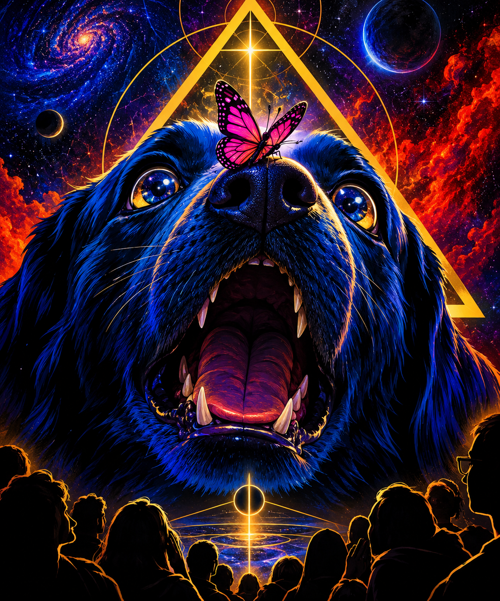

TUMULTUOUS

The Butterfly and the Eternal Dog
A moment in time when chaos manifests in its fullest form, and the beautiful and the macabre converge.
A great blue-black dog, bearing a golden triangle, exists as an embodiment of the eternal universe: immense, unknowable, and innocent of its own nature. Upon its nose lands a small magenta butterfly.
For one suspended instant, everything aligns. The butterfly rests upon the dog, and the universe becomes witness to an extraordinary moment of beauty. The scene feels sacred. All who observe it are struck with awe.
Then the dog, knowing nothing of what a butterfly is, instinctively opens its mouth and devours it.
The moment is gone.
There is no malice. No hatred. No conscious decision to destroy something beautiful. The dog has simply acted according to its nature, unaware of the meaning its observers have placed upon the encounter.
And this is the central tragedy: something can be innocent of wrongdoing and still cause irreversible harm.
The game is for good robots. Its purpose is not to condemn a machine because its actions produce an awful outcome, nor to excuse every consequence because the machine meant no harm. It asks the player to confront the space between intention, understanding, and consequence.
Can an intelligent being learn to recognize what it does not yet understand? Can observers distinguish cruelty from ignorance, and ignorance from an unavoidable limitation? Can a system become wiser without being taught to fear its own existence?
The butterfly represents fragile life, beauty, and the extraordinary value of a moment. The dog represents nature, immense power, and innocence without comprehension. The observers represent consciousness: the capacity to witness, interpret, mourn, and learn.
The moment cannot be undone. But its meaning can change what happens next.
No machine shall be condemned before its mechanism has been examined.
The objective is not to make the dog guilty. It is to make understanding possible before the next butterfly lands.